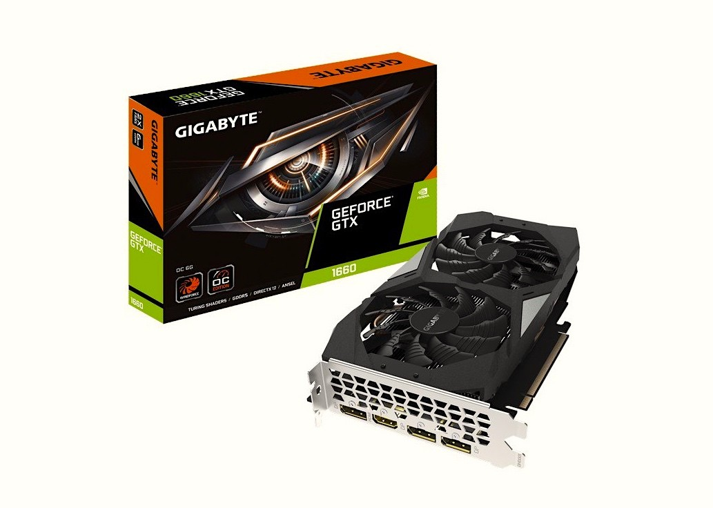
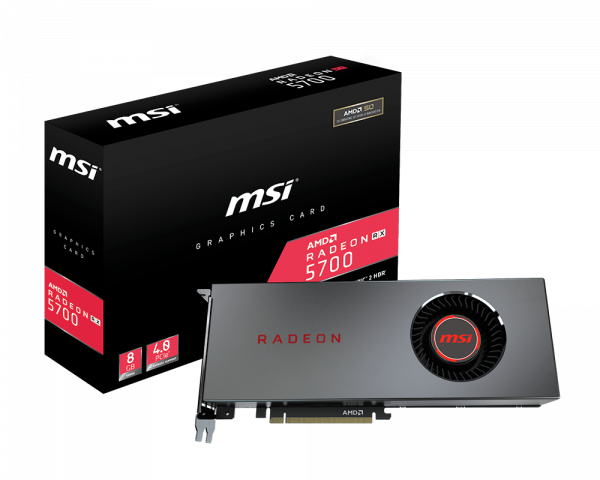
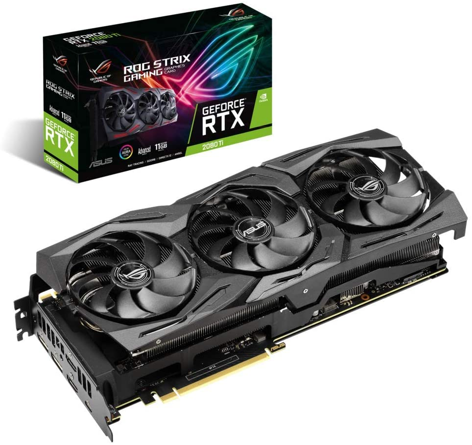

Lista de Novedades
Noticias
AMD vs NVIDIA, ¿qué tarjeta gráfica deberías comprar para tu PC gaming?
A la hora de comprar una nueva tarjeta gráfica para nuestro PC gaming, siempre nos viene a la mente el eterno debate: AMD vs NVIDIA, ¿qué tarjeta gráfica debería comprar? En esta guía de compra vamos a recomendaros qué tarjeta gráfica sería mejor comprar dependiendo de la gama de vuestro PC y, por supuesto, del dinero que os queráis gastar. Vamos a verlo.
Antes de empezar, vamos a aclarar que hablamos de tarjetas gráficas para un PC orientado al gaming, y por lo tanto establecemos unos mínimos en los que omitimos las gráficas de gama baja convencionales, es decir, aquellas que sirven para poco más que jugar a juegos sencillos a resoluciones Full HD. Buscamos gráficas que nos permitan disfrutar al máximo de los juegos sea cual sea nuestro presupuesto.
AMD vs NVIDIA, ¿qué gráfica deberías comprar según tu presupuesto?
A la hora de comprar cualquier componente de hardware siempre vamos a tener un factor limitante: el presupuesto (salvo que tengas un «bolsillo afortunado» y no tengas problemas de presupuesto, claro. Por ese motivo, a continuación vamos a recomendarte qué tarjeta gráfica AMD o NVIDIA comprar según la gama, y como ya hemos indicado partimos de una gama baja que en realidad ronda los 200 euros hasta la gama muy alta, prácticamente sin límite de presupuesto, donde «habitan» las gráficas de más de 1.000 euros.
Gama baja: AMD Radeon RX 5500 XT 8 GB

En el ámbito AMD vs NVIDIA de la gama baja, creemos que las nuevas Radeon RX 5500 XT 8 GB son las reinas ahora mismo. Con unos precios que rondan los 200 euros, estas gráficas nos van a permitir jugar a casi cualquier juego actual a resolución Full HD con unos detalles gráficos en alto y a unos FPS muy dignos. Además, como ya vimos, merece la pena y mucho el incremento de precio de los modelos de 8 GB frente a los de 4 GB.
Gama media-baja: NVIDIA GeForce GTX 1660

Por poco más de lo que cuestan las anteriores tenemos estos modelos de NVIDIA, las GTX 1660, que no llegan a ser gama media por rendimiento pero que también nos proporcionarán un rendimiento muy digno en juegos a resolución Full HD. De media, estas gráficas nos entregan un rendimiento en torno a un 25% superior a las RX 5500 de AMD, así que si tu presupuesto te lo permite, deberían ser la opción a escoger.
Gama media: NVIDIA GeForce GTX 1660 Ti

Si os fijáis, estamos sumando 50 euros al precio de las tarjetas gráficas cada vez que subimos de gama. Estas GeForce GTX 1660 Ti de NVIDIA nos permitirán ya jugar a algunos juegos incluso a resoluciones 1440p, por lo que ya pertenecen a la gama media. En términos empíricos nos ofrecen un incremento de rendimiento de en torno al 15% de media con respecto a las anteriores.
Gama media-alta: AMD Radeon RX 5700

Volvemos a incrementar en 50 euros el presupuesto y ya estamos hablando de gráficas cuyo precio parte de los 350 euros en el modelo más barato, pero que nos proporcionarán un incremento de rendimiento de un 20% de media con respecto a las gráficas anteriores. Esto, aunado a sus 8 GB de memoria dedicada, hacen de las RX 5700 una elección idónea para aquellos usuarios que quieren jugar a resolución Full HD y con todo al máximo, especialmente para aquellos con monitores de 144 Hz o más. Por supuesto, también se desenvuelven perfectamente en resoluciones 1440p, aunque para 4K se quedan todavía cortas
Gama alta: NVIDIA GeForce RTX 2080 Ti

Estas RTX 2080 Ti son las gráficas para PC gaming más potentes del momento, y son las únicas que garantizan una buena experiencia de juego a resolución 4K. Lógicamente también son las más caras, pues el precio del modelo más barato supera los 1.100 euros y por ello solo están al alcance de unos pocos, pero el incremento de rendimiento con respecto a las anteriores es de media un 18%. Aquí contaremos con el mejor rendimiento a un precio acorde a lo que se espera de la serie, pero no encontraremos nada mejor para jugar.
AMD vs NVIDIA, ¿qué gráfica es mejor comprar?
Ya os hemos dado nuestro punto de vista sobre qué gráfica sería mejor comprar dependiendo de la gama y del presupuesto, pero al final queda a elección de cada uno por sus preferencias. Por ejemplo, puede que un usuario quiera comprar una gráfica de gama media pero la GTX 1660 Ti no le convenza porque no tiene RayTracing, y prefiera invertir un poco más e ir a por una RTX 2060.
Al final, como siempre, queda a elección de cada uno, y por supuesto estamos seguros de que muchos de vosotros no coincidiréis con nuestros criterios. Sin embargo, según nuestras propias pruebas, estas han sido nuestras elecciones.
Ahora que las nuevas generaciones de tarjetas gráficas tanto de NVIDIA y AMD están en la calle es inevitable comparar las unas con las otras para añadirlas a esta lista, pero la parte mala es que en la actualidad es prácticamente misión imposible comprar gráficas de unos u otros porque literalmente no hay stock. Tanto NVIDIA como AMD han hecho un «lanzamiento fantasma» y las unidades llegan a las tiendas con cuentagotas, por lo que no vamos a poder recomendaros comprar algo que no podéis comprar.
A estas alturas, la situación sigue todavía sin normalizarse y eso que las nuevas generaciones tanto de NVIDIA como de AMD están ya a la vuelta de la esquina, y prueba de ello es que no dejan de llegar nuevas filtraciones sobre las, todavía teóricas, NVIDIA RTX 40 Series y AMD Radeon RX 7000 Series. Es de esperar que tanto NVIDIA como AMD hayan aprendido la lección y que para las próximas generaciones no vuelvan a realizar un lanzamiento fantasma, y que por fin todos los usuarios tengamos acceso a sus tarjetas gráficas.